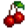
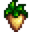
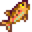
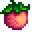

Slot Machine
Slot Machines are a mini-game found in the Casino.
The player can bet either 10 or 100 Qi coins when using a slot machine. If the results match one of the winning lines, the player receives a multiple of their bet. If there is no match the player loses their bet.
Daily Luck and Luck buffs (from food items, Ginger Ale, Lucky Rings, etc.) can increase the chance of winning and the expected return when gambling. Otherwise, rolls are randomly determined.
Winning lines
There are 10 possible winning lines, each one giving different multipliers.
| Line | Chance[1] | Multiplier |
|---|---|---|
 |
20% | 2 |
| 10% | 3 | |
 |
8% | 5 |
| 1% | 30 | |
 |
0.3% | 80 |
| 0.2% | 120 | |
 |
0.25% | 200 |
| 0.09% | 500 | |
| 0.06% | 1000 | |
| 0.1% | 2500 |
This is adjusted multiplicatively by daily Luck, increasing by 20% at best or decreasing by 20% at worst with the Special Charm adding 5%. Food buffs add 8% for every point of Luck (e.g., if daily Luck is max and luck from food is 3 then the chance to get 1 cherry is 20% * (1 + 0.2 + 0.24) = 28.8%).
Expected Value Calculation
To calculate the expected net gain or loss from playing the slot machine, we use the formula:
Net Expected Gain/Loss = (B × Σ(Pi × Mi)) - B
Where:
- B = Bet amount (in units)
- Pi = Probability of the i-th outcome
- Mi = Multiplier for the i-th outcome
- Σ = Sum over all possible outcomes (i=1 to n)
After accounting for the following:
Net Expected Gain/Loss = B × ((0.2 × 2) + (0.1 × 3) + (0.08 × 5) + (0.01 × 30) + (0.003 × 80) + (0.002 × 120) + (0.0025 × 200) + (0.0009 × 500) + (0.0006 × 1000) + (0.001 × 2500)) - B
Which simplifies to:
Net Expected Gain/Loss = B × 5.93 - B = B × (5.93 - 1)
Then reducing to:
Net Expected Gain/Loss = B × 4.93
To simplify, if you spend  100 on a spin you can expect a net gain of
100 on a spin you can expect a net gain of  493 per spin!
493 per spin!
References
- ↑ See Slots::setSlotResults in the game code.